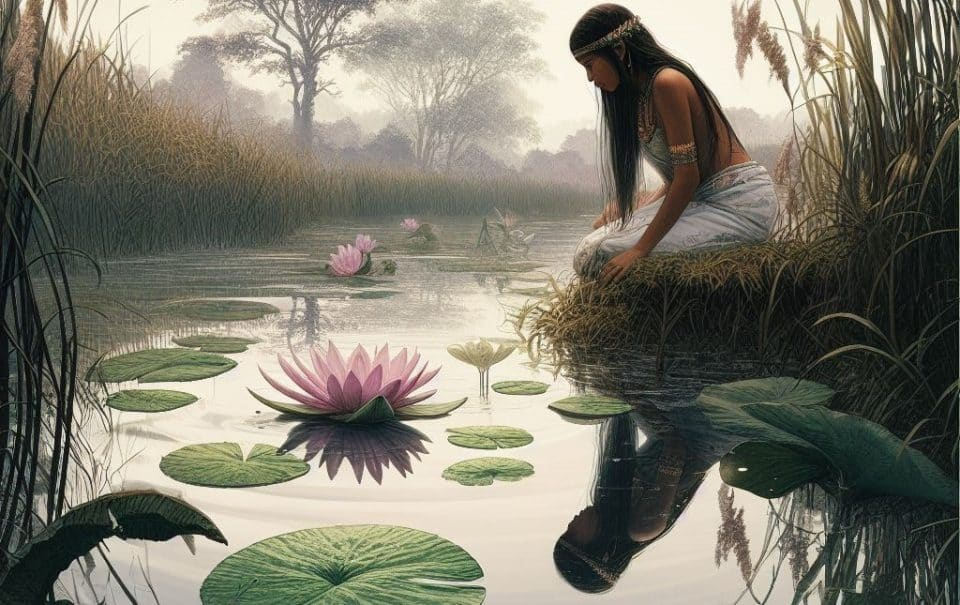
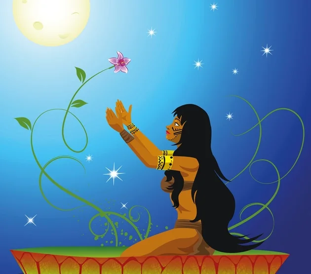
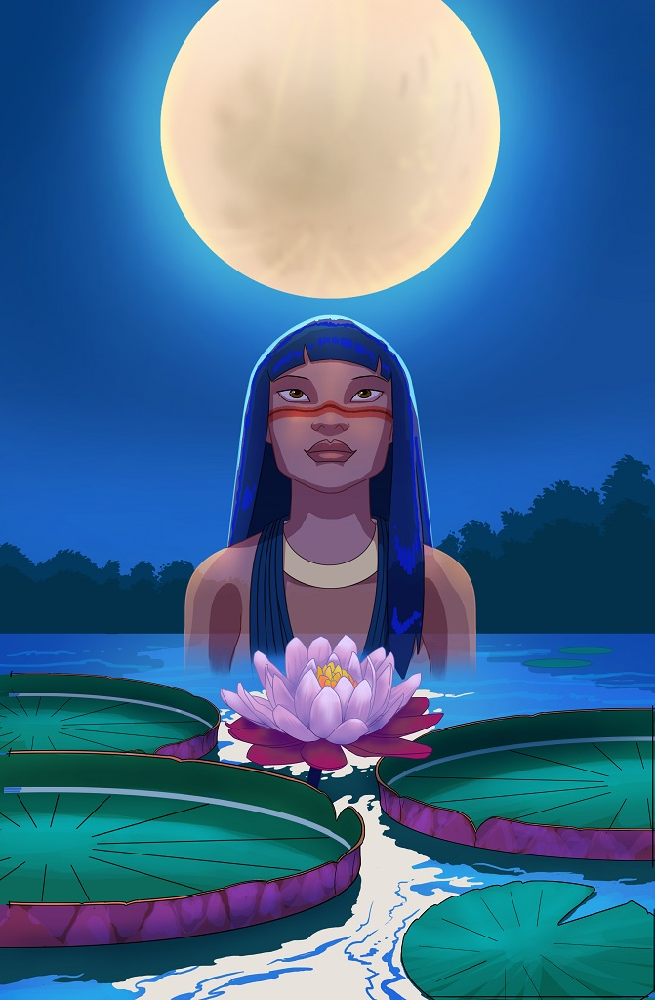

A Lenda Da Vitória Régia

Na tranquila e exuberante Amazônia, onde os rios serpenteiam entre árvores gigantescas e vida selvagem abundante, floresce uma das mais belas lendas da região: a lenda da Vitória-Régia.
Dizem os indígenas que a Vitória-Régia era uma bela jovem indígena chamada Naiá, conhecida por sua gentileza e amor pela natureza. Naiá vivia às margens de um grande lago, onde passava seus dias admirando as águas tranquilas e as flores que flutuavam suavemente sobre a superfície.
Naiá era apaixonada pela lua, cujo reflexo prateado iluminava as noites escuras da floresta. Ela sonhava em um dia alcançar a lua e se tornar uma estrela brilhante no céu. Porém, o destino tinha outros planos para ela.
Certo dia, enquanto colhia frutas na floresta, Naiá viu refletida nas águas do lago a imagem do guerreiro Jaci, um jovem valente e de grande beleza, que vinha beber água da lagoa. Naiá se apaixonou perdidamente por Jaci, e sua vida passou a girar em torno do desejo de conquistar o amor do guerreiro.

Determinada a conquistar o coração de Jaci, Naiá recorreu à feitiçaria, pedindo aos deuses que a transformassem em uma linda flor para atrair a atenção do guerreiro. Tocados pela sinceridade e pureza de seu desejo, os deuses atenderam às suas preces, transformando-a na mais bela flor que já havia existido: a Vitória-Régia.
Jaci, intrigado pela beleza da flor, aproximou-se do lago todas as noites para admirar sua forma perfeita e suas pétalas brancas e rosadas que pareciam reluzir sob a luz da lua. No entanto, Naiá estava triste, pois como flor não podia mais interagir com Jaci como gostaria.
Os deuses, tocados pela pureza e o sacrifício de Naiá, decidiram presenteá-la com uma condição especial. Toda noite de lua cheia, a Vitória-Régia se transformaria novamente na bela jovem Naiá, para que ela e Jaci pudessem se amar e viver essa experiência.

Voltar A Seleção De Histórias
Jorge Vinicius Rocha Cantarinho 2°L